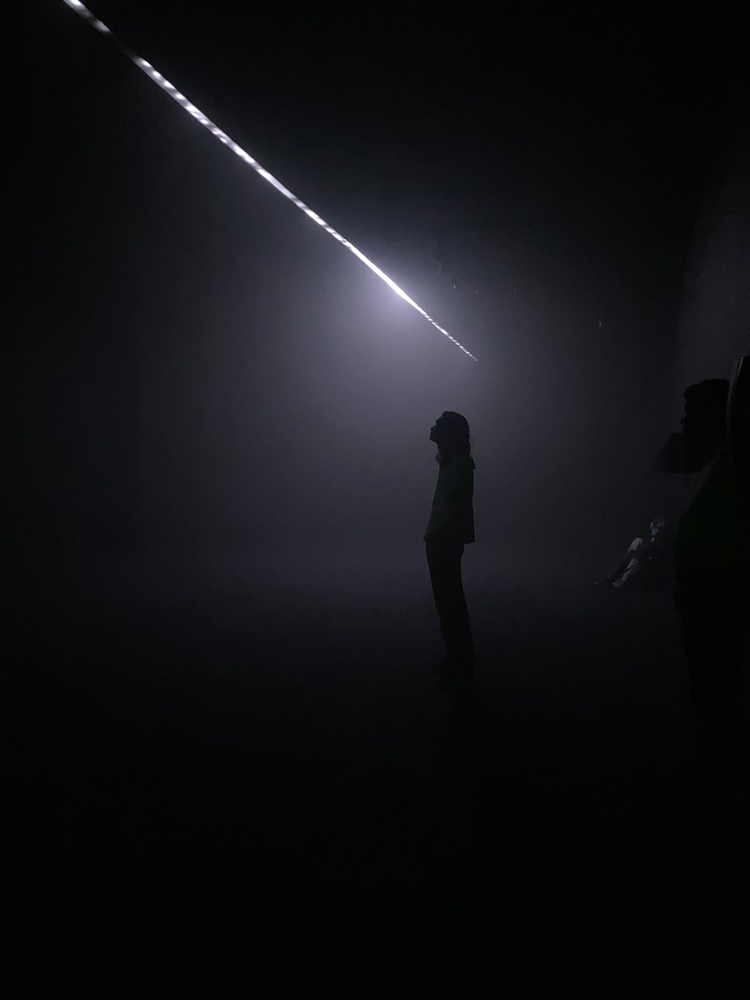

Thomas Ulmer

Hello, I'm a graduate of the departments of Mathematics and Computer Science at Reed College and a general nerd about computers.
My interests within computer science include programming language design, type systems, and low level/systems programming. Outside of computers, I am also interested in art, philosophy, games, and tea.
Short descriptions of my more interesting projects can be found on my projects page. You can find some of the things I am thinking about on my blog. The 'Next' and 'Previous' links in the header go to the sites of some of my friends (hopefully in a webring, but no promises).
The theming of this site is provided by these fine folks: watercss.kognise.dev.